[TACZ] Create: Precise Manufacturing
附属模组
[TACZ] Create: Precise Manufacturing
这是什么
来自 mcmod 1.20.1 附属模组清单，共 155 个物品。
命名空间：
prma 1.20.1 版本：本页物品与配方直接取自该版本的 jar。全部物品155
12号霰弹弹头prma:12g_head
没有工作台/机器配方
12号霰弹弹头(未完成)prma:12g_transition
没有工作台/机器配方
.308温彻斯特弹头prma:308_head
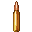
.308温彻斯特弹头(未完成)prma:308_transition
没有工作台/机器配方
.30-06春田弹头prma:30_06_head
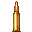
.30-06春田弹头(未完成)prma:30_06_transition
没有工作台/机器配方
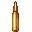
.338拉普阿弹头(未完成)prma:338_transition
没有工作台/机器配方
.357马格南弹头prma:357mag_head
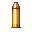
.357马格南弹头(未完成)prma:357mag_transition
没有工作台/机器配方
40mm榴弹壳prma:40mm_casing
40mm榴弹头prma:40mm_slug
.45 ACP弹头prma:45acp_head
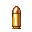
.45 ACP弹头(未完成)prma:45acp_transition
没有工作台/机器配方
4.6mm穿甲弹头prma:46x30_head
4.6mm穿甲弹头(未完成)prma:46x30_transition
没有工作台/机器配方
.50 AE弹头prma:50ae_head
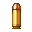
.50 AE弹头(未完成)prma:50ae_transition
没有工作台/机器配方
.50 BMG弹头prma:50bmg_head
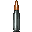
.50 BMG弹头(未完成)prma:50bmg_transition
没有工作台/机器配方
5.56x45mm弹头prma:556x45_head
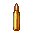
5.56x45mm弹头(未完成)prma:556x45_transition
没有工作台/机器配方
5.7x28mm弹头prma:57x28_head
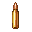
5.7x28mm弹头(未完成)prma:57x28_transition
没有工作台/机器配方
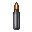
5.8mm DBP87弹头(未完成)prma:58x42_transition
没有工作台/机器配方
6.8x51mm Fury弹头prma:68x51fury_head
6.8x51mm Fury弹头(未完成)prma:68x51fury_transition
没有工作台/机器配方
7.62x25mm托卡列夫弹头prma:762x25_head
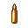
7.62x25mm托卡列夫弹头(未完成)prma:762x25_transition
没有工作台/机器配方
7.62x39mm弹头prma:762x39_head
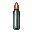
7.62x39mm弹头(未完成)prma:762x39_transition
没有工作台/机器配方
7.62x54mm弹头prma:762x54_head
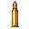
7.62x54mm弹头(未完成)prma:762x54_transition
没有工作台/机器配方
9mm弹头prma:9mm_head
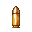
9mm弹头(未完成)prma:9mm_transition
没有工作台/机器配方
铝锭prma:aluminum_ingot
没有工作台/机器配方
弹药占位符prma:ammo_placeholder
没有工作台/机器配方
玄武岩粉prma:basalt_powder
没有工作台/机器配方
空白蓝图prma:blank_blueprint
没有工作台/机器配方
空白铸模prma:blank_cast
没有工作台/机器配方
底火激发片prma:cartridge_primer
铸模床prma:casting_basin
没有工作台/机器配方
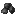
粉碎的玄武岩prma:crushed_basalt
没有工作台/机器配方
粉碎生铝prma:crushed_raw_aluminum
没有工作台/机器配方
粉碎生铅prma:crushed_raw_lead
没有工作台/机器配方
平头螺丝prma:flat_head_screw
没有工作台/机器配方
锭模具prma:ingot_cast
没有工作台/机器配方
一簇铁质弹丸prma:iron_pellet_cluster
没有工作台/机器配方
铅锭prma:lead_ingot
没有工作台/机器配方
锁定回位弹簧prma:locking_return_coil
没有工作台/机器配方
长型弹药火药prma:long_ammunition_gunpowder
大口径黄铜弹头prma:long_brass_head
没有工作台/机器配方
高火药长型黄铜弹壳(未完成)prma:long_brass_high_gunpowder_cartridge_transition
没有工作台/机器配方
低火药长型黄铜弹壳(未完成)prma:long_brass_low_gunpowder_cartridge_transition
没有工作台/机器配方
中火药长型黄铜弹壳(未完成)prma:long_brass_medium_gunpowder_cartridge_transition
没有工作台/机器配方
未完成的大口径黄铜弹壳prma:long_brass_transition
没有工作台/机器配方
大口径铜质弹头prma:long_copper_head
没有工作台/机器配方
未完成的大口径铜质弹壳prma:long_copper_transition
没有工作台/机器配方
大口径铁质弹头prma:long_iron_head
没有工作台/机器配方
高火药长型铁质弹壳(未完成)prma:long_iron_high_gunpowder_cartridge_transition
没有工作台/机器配方
低火药长型铁质弹壳(未完成)prma:long_iron_low_gunpowder_cartridge_transition
没有工作台/机器配方
中火药长型铁质弹壳(未完成)prma:long_iron_medium_gunpowder_cartridge_transition
没有工作台/机器配方
未完成的大口径铁质弹壳prma:long_iron_transition
没有工作台/机器配方
M型螺丝prma:m_screw
没有工作台/机器配方
中口径黄铜弹壳prma:medium_brass_casing
中口径黄铜弹头prma:medium_brass_head
没有工作台/机器配方
高火药中型黄铜弹壳(未完成)prma:medium_brass_high_gunpowder_cartridge_transition
没有工作台/机器配方
低火药中型黄铜弹壳(未完成)prma:medium_brass_low_gunpowder_cartridge_transition
没有工作台/机器配方
中火药中型黄铜弹壳(未完成)prma:medium_brass_medium_gunpowder_cartridge_transition
没有工作台/机器配方
未完成的中口径黄铜弹壳prma:medium_brass_transition
没有工作台/机器配方
中口径铜质弹头prma:medium_copper_head
没有工作台/机器配方
高火药中型铜质弹壳(未完成)prma:medium_copper_high_gunpowder_cartridge_transition
没有工作台/机器配方
低火药中型铜质弹壳(未完成)prma:medium_copper_low_gunpowder_cartridge_transition
没有工作台/机器配方
中火药中型铜质弹壳(未完成)prma:medium_copper_medium_gunpowder_cartridge_transition
没有工作台/机器配方
未完成的中口径铜质弹壳prma:medium_copper_transition
没有工作台/机器配方
中口径铁质弹头prma:medium_iron_head
没有工作台/机器配方
高火药中型铁质弹壳(未完成)prma:medium_iron_high_gunpowder_cartridge_transition
没有工作台/机器配方
低火药中型铁质弹壳(未完成)prma:medium_iron_low_gunpowder_cartridge_transition
没有工作台/机器配方
中火药中型铁质弹壳(未完成)prma:medium_iron_medium_gunpowder_cartridge_transition
没有工作台/机器配方
未完成的中口径铁质弹壳prma:medium_iron_transition
没有工作台/机器配方
铁合金锭prma:metal_alloy_ingot
没有工作台/机器配方
现代动能枪占位符prma:modern_kinetic_gun_placeholder
没有工作台/机器配方
熔融铝桶prma:molten_aluminum_bucket
没有工作台/机器配方
熔融铜桶prma:molten_copper_bucket
没有工作台/机器配方
熔融铁桶prma:molten_iron_bucket
没有工作台/机器配方
熔融合金桶prma:molten_metal_alloy_bucket
没有工作台/机器配方
熔融强化铝桶prma:molten_strong_aluminum_alloy_bucket
没有工作台/机器配方
熔融锌桶prma:molten_zinc_bucket
没有工作台/机器配方
粗制铜粉prma:raw_copper_powder
没有工作台/机器配方
粗制硫磺粉prma:raw_sulfur_powder
没有工作台/机器配方
粗制锌粉prma:raw_zinc_powder
没有工作台/机器配方
霰弹弹丸prma:shotgun_bearing
霰弹壳底座prma:shotgun_shell_base
未完成的霰弹壳prma:shotgun_shell_transition
没有工作台/机器配方
小口径黄铜弹头prma:small_brass_head
没有工作台/机器配方
高火药小型黄铜弹壳prma:small_brass_high_gunpowder_cartridge
高火药小型黄铜弹壳(未完成)prma:small_brass_high_gunpowder_cartridge_transition
没有工作台/机器配方
低火药小型黄铜弹壳(未完成)prma:small_brass_low_gunpowder_cartridge_transition
没有工作台/机器配方
中火药小型黄铜弹壳(未完成)prma:small_brass_medium_gunpowder_cartridge_transition
没有工作台/机器配方
未完成的小口径黄铜弹壳prma:small_brass_transition
没有工作台/机器配方
小口径铜质弹头prma:small_copper_head
没有工作台/机器配方
高火药小型铜质弹壳(未完成)prma:small_copper_high_gunpowder_cartridge_transition
没有工作台/机器配方
低火药小型铜质弹壳(未完成)prma:small_copper_low_gunpowder_cartridge_transition
没有工作台/机器配方
中火药小型铜质弹壳(未完成)prma:small_copper_medium_gunpowder_cartridge_transition
没有工作台/机器配方
未完成的小口径铜质弹壳prma:small_copper_transition
没有工作台/机器配方
小口径铁质弹头prma:small_iron_head
没有工作台/机器配方
高火药小型铁质弹壳(未完成)prma:small_iron_high_gunpowder_cartridge_transition
没有工作台/机器配方
低火药小型铁质弹壳(未完成)prma:small_iron_low_gunpowder_cartridge_transition
没有工作台/机器配方
中火药小型铁质弹壳(未完成)prma:small_iron_medium_gunpowder_cartridge_transition
没有工作台/机器配方
未完成的小口径铁质弹壳prma:small_iron_transition
没有工作台/机器配方
直平弹簧prma:straight_flat_coil
没有工作台/机器配方
直大弹簧prma:straight_large_coil
没有工作台/机器配方
直小弹簧prma:straight_small_coil
没有工作台/机器配方
强化铝合金锭prma:strong_aluminum_alloy_ingot
没有工作台/机器配方
硫磺粉prma:sulfur_powder
粗小杆prma:thick_small_rod
没有工作台/机器配方
细小杆prma:thin_small_rod
没有工作台/机器配方
未成形的湿玄武岩混合物prma:unformed_basalt
没有工作台/机器配方